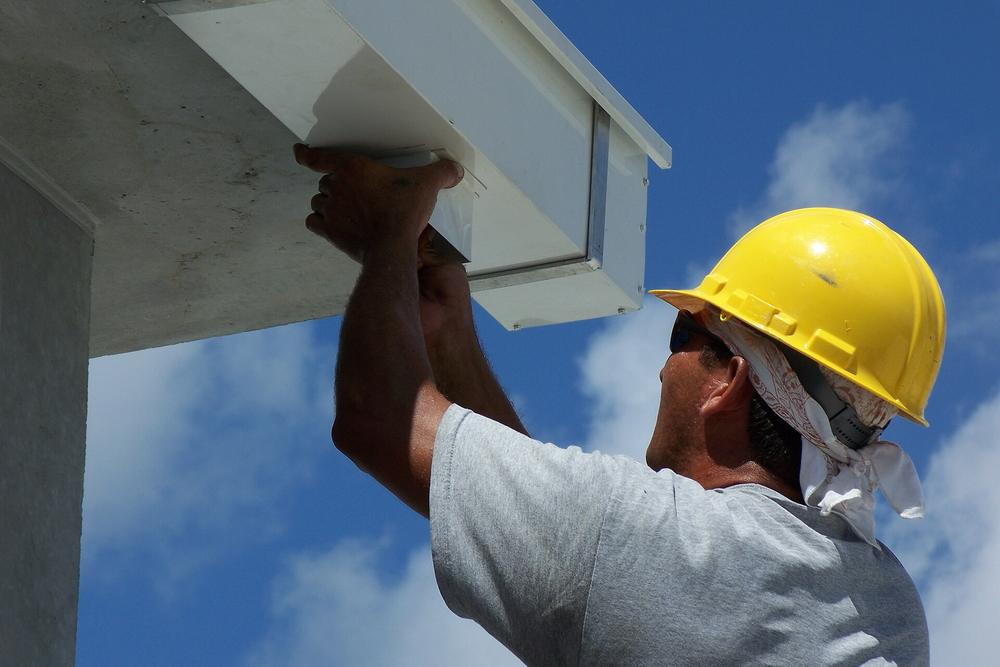
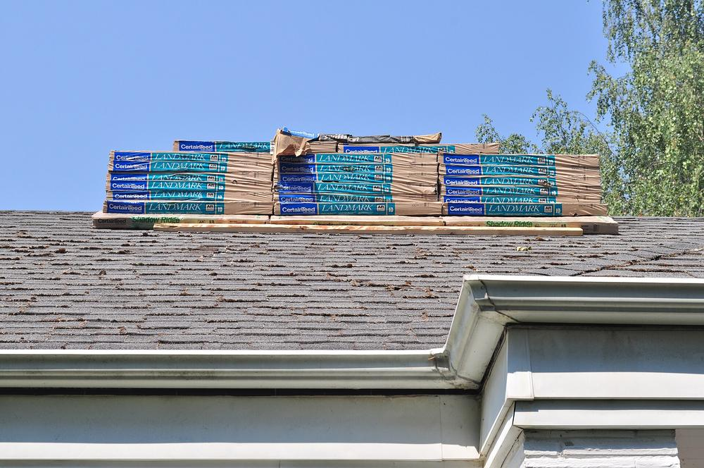
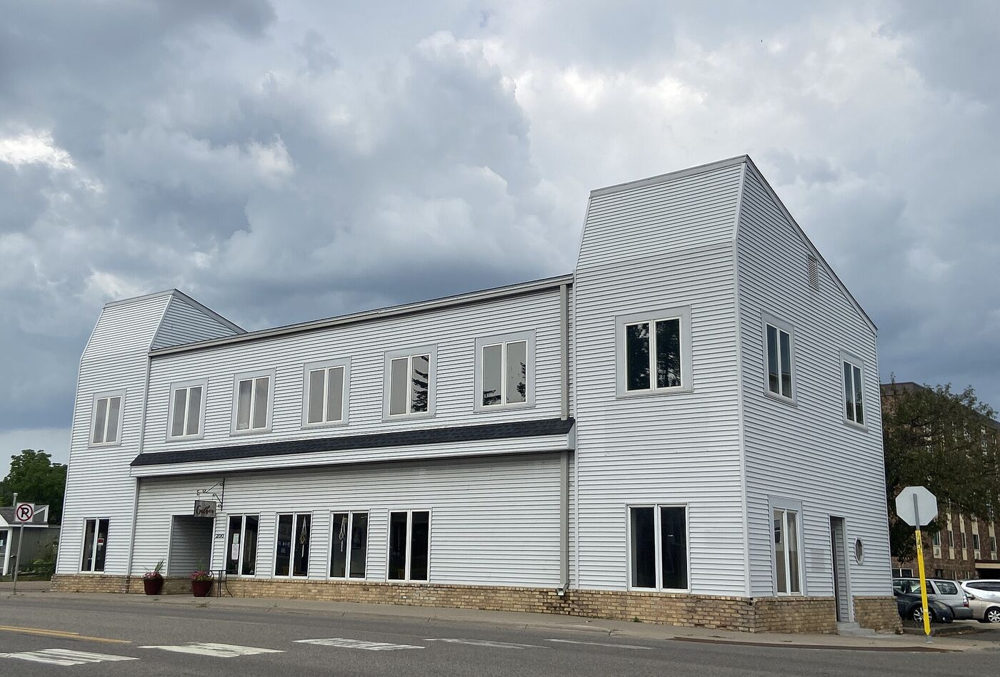

Fayetteville, NC · Gutters
Seamless gutters built for Carolina downpours
Five- and six-inch seamless aluminum gutters formed on site, with downspouts sized for summer storms and guards that keep pine straw out.

Gutters in Fayetteville
What you get
Gutters are the cheapest part of protecting a house from water, and the part most often done wrong. Undersized troughs overflow in a July thunderstorm, sectional joints drip within a few years, and downspouts that dump next to the foundation wash out the sandy soil around much of Fayetteville and send water into crawlspaces.
We roll seamless gutters from a coil on our truck, cut to the exact length of each run, so the only joints are at the corners. Every install includes new downspouts, hidden hangers and a plan for where the water goes once it reaches the ground.
Every gutter install includes
- Seamless runs formed on site. One continuous piece per wall, with sealed and riveted corners.
- Hidden hangers every 24 inches, screwed into the fascia rafter tails so the gutter holds under a full load of water and wet leaves.
- Correct pitch. About a quarter inch of fall per 10 feet, so water drains instead of standing and breeding mosquitoes.
- Downspouts sized and placed for your roof. 3×4" oversize downspouts where a big roof plane drains to one corner.
- Splash blocks or extensions that move water at least four feet from the foundation, or tie-ins to underground drains.
- Fascia check. We replace soft fascia boards before hanging new gutters on them.
Options & pricing demo
Gutter options
| Option | Best for | Lifespan | Installed |
|---|---|---|---|
| 5" K-style aluminum | Standard on most homes. Handles typical roof areas and pitches. | 20–30 yr | $9–$13 / ft |
| 6" K-style aluminum | 40% more capacity. Our pick for steep roofs, long runs and valleys that funnel water to one spot. | 20–30 yr | $11–$16 / ft |
| Half-round aluminum or copper | Traditional profile for historic and custom homes. Copper ages to a brown patina. | 25–50+ yr | $16–$40 / ft |
| Micro-mesh gutter guards | Stainless mesh that blocks pine needles and roof grit while letting heavy rain through. | 20+ yr | $8–$14 / ft |
| Screen or reverse-curve guards | Lower cost. Good for broad-leaf trees, less effective against pine straw. | 10–15 yr | $4–$8 / ft |
| Underground downspout drains | Buried pipe that carries water to a pop-up emitter away from the house. | 30+ yr | $15–$30 / ft |
Installed price per linear foot. Demo ranges for illustration; your estimate sets a firm price.
Warning signs
Signs your gutters are failing
- Water spilling over the front edge in heavy rain, even when the gutter is clean. That means it is undersized or pitched wrong.
- Drips at seams and corners, or rust streaks and peeling paint on the fascia behind the gutter.
- Sagging runs or hangers pulling out of the fascia, often after a load of wet leaves or ice.
- Washed-out mulch or bare trenches in the beds below the roof edge, or standing water against the foundation.
- A damp or musty crawlspace after storms. Many of those trace back to downspouts emptying beside the house.
How it works
Start to finish
Measure & plan
We measure every run, look at roof size and pitch above each one, and decide where each downspout should drain.
Written estimate
Price per foot, downspouts, guards and any fascia repair listed separately. Usually the same day.
Remove old gutters
Old gutters come down and are hauled off. We repair or replace fascia that has rotted behind them.
Form & hang
Gutters are rolled from coil on site in your trim color, then hung on hidden hangers with the right pitch.
Water test
We run a hose through every run before we leave to confirm it drains to the downspouts with no leaks.
Local know-how
Pine straw, sand and summer storms
Longleaf and loblolly pines are everywhere around Fayetteville, and their needles mat into a dam that most screen guards let right through. On homes under pines we recommend stainless micro-mesh, which is the one guard type that reliably keeps needles out without blocking heavy rain.
Much of the area sits on sandy Sandhills soil that drains fast but erodes easily. A downspout that dumps beside the foundation can undercut a slab or flood a crawlspace in a single summer, so every install ends with water moved well away from the house.
FAQ
Gutters questions
Don't see yours? Call and a real person will answer.
How much do new gutters cost?
For a typical one-story Fayetteville home with about 150 feet of gutter, seamless 5" aluminum with downspouts usually runs $1,400 to $2,200. Six-inch gutters and guards add to that. demo
5-inch or 6-inch gutters?
Five-inch handles most single-story homes. We recommend 6-inch for steep roofs, large roof areas draining to one run, and anywhere a valley dumps water into the gutter.
Are gutter guards worth it?
Under pine trees, yes. Micro-mesh guards cut cleanings from two or three a year to an occasional rinse. Under a few hardwoods with an easy roofline, regular cleaning may be cheaper.
Can you match my trim color?
Yes. Seamless aluminum comes in dozens of factory colors, and we bring a color chart to the estimate.
Do you replace gutters during a roof replacement?
We can, and it is the cheapest time to do it because the drip edge and fascia are already exposed. If your gutters are in good shape, we protect and reuse them.
Service area
Gutters across Fayetteville and 50 miles out
We serve Fayetteville and every town within about 50 miles, from Sanford to Lumberton and Southern Pines to Clinton.
Cumberland County
Fayetteville · Hope Mills · Spring Lake · Fort Bragg · Eastover · Stedman · Wade · Godwin · Linden
Harnett County
Lillington · Dunn · Erwin · Angier
Robeson County
Lumberton · St. Pauls · Parkton · Red Springs · Pembroke
Sampson County
Clinton · Roseboro · Autryville · Salemburg
Moore County
Southern Pines · Aberdeen · Pinehurst · Vass
Hoke & Scotland counties
Raeford · Laurinburg
Lee & Johnston counties
Sanford · Broadway · Benson · Smithfield
Bladen County
Elizabethtown
Related services
Often done together

Roofing
Tear-offs, leak repairs and storm claims for homes and businesses across Cumberland County and the Sandhills. Most replacements are done in one to two days.
Roofing details →
Siding
Vinyl, fiber cement and engineered wood siding, plus soffit, fascia and trim. Full replacements, storm repairs and color matching for one damaged wall.
Siding details →Get a gutters quote
Free inspection and written quote, usually within one business day.